展覧会
Backrooms( Found Bodies )
第1部2026年11月 都内某所 第2部2026年12月 関西某所
開催概要へステートメント
リミナルスペースとは、かつて「オルタナティブ・スペース」と呼ばれていたものの「死体」である。
もちろん、ネットミームとしてのリミナルスペースは、決してそのように定義されてこなかった。インターネット上のリミナルスペースに「新たな美学」を見出そうとする人々は概ね、それらを現代における最新の「不気味なもの」、つまり新しい「外部」や「他者」として受け取り、ネットカルチャー発の創造的ムーブメントに違いないと言祝いでいる。
しかし、そのようなトレンドの「美学化」「言語化」こそが、私たちの目の前に転がる「オルタナティブ・スペースの死体」を覆い隠す。いくらリミナル性についての理論を遡り、ブルータリズム建築やシュルレアリスムとの類似、影響関係を並べたてたところで、結局のところ、それらは不気味さや不穏さ、奇妙なノスタルジーといった感情を掻き立てるイメージのリスト（wiki）でしかない。
リミナルスペースは人類学や美術史と淀みなく連続しているはずである、と考えるその「美学」こそが、オルタナティブ・スペースが死んでしまったこの現実に対する「否認」なのだ。そしてもちろん、リミナルスペースなど浅薄なネットカルチャーのトレンドに過ぎず、アートと全く関係がないとする態度もまた、現代美術の置かれた絶望的な現状から目を背ける否認にほかならない。
現代美術はその始まりからずっと、新たなオルタナティブ・スペースの誕生とともにあった。にもかかわらず、ここ十数年で加速度的に進行し、手の施しようがないように見えるオルタナティブ・スペースの死について、誰もが語ろうとしない。
リミナルスペースが「新たな美学」（オルタナティブ・スペースは新しく生まれている）であってほしいと望む否認と、リミナルスペースなど「アートに比べれば」取るに足らないもの（オルタナティブ・スペースはまだ死んでいない）であると切り捨てる否認。その二つの否認が招いたのは、一方では無内容なアートフェアの乱立や、ヴィジョンを欠いたブランディングとしてのアート投資の流行であり、また一方では権威主義の復活や、ネット・アクティヴィズムと一体化したアートのポピュリズム化であった。
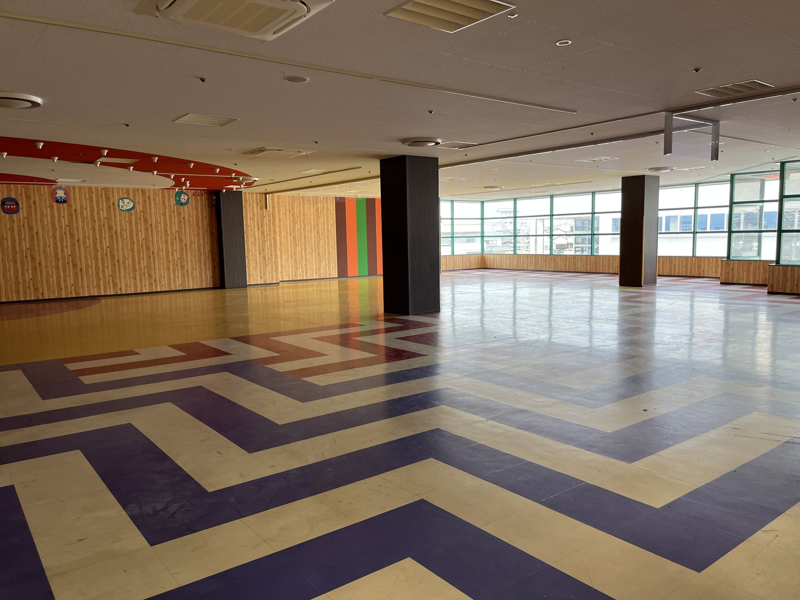
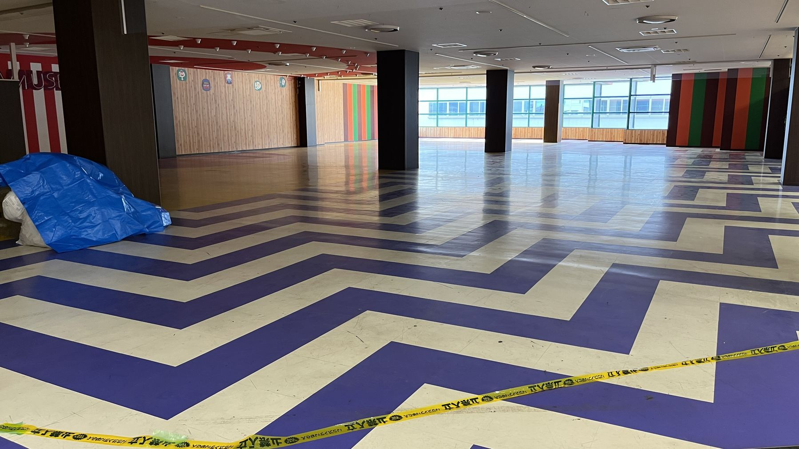
まず私たちが立ち返るべきは、リミナルスペースが「ネットホラー」のひとつとして生成、構築され、流通している、という事実である。そもそも、ネットミームとしてのリミナルスペースの起源が、ネット掲示板に投稿された「ヤバい画像（cursed images）」「落ち着けない画像（unsettling images）」だったのは、そこに映っているものがまぎれもなく「死体としての空間」であり、多くの人々が直感的、無意識的にその死臭を嗅ぎ取ったからなのだ。
かつてオルタナティブ・スペースと呼ばれた空間に投影されていた、あらゆるヴィジョンや可能性や期待が、色褪せながら消滅へ向かっていったその果てに、ネクロフィリアとしてのリミナルスペースが現れたのである。
リミナルスペースについて考えるとき、私はいつも、ある前衛美術家の作品を思い出す。暗く、陰鬱な空気が漂う小さいギャラリーに、棺桶のような木箱が並んでいる。木箱には透明なビニール袋がかぶせられており、中には大量の新聞紙が乱雑に投げ入れられている。天井もまた、透明なビニールで覆われ、まるで雨漏りした水を受け止めるかのように、ところどころ水溜まりができている。記録によれば、アーティストがジョウロを持って、木箱の中の新聞紙に「水やり」をしていたらしい。「蓄積された情報を耕す」という意味があったそうだ。
５０年以上も前の作品なので、もちろん私は実見していない。しかし、いつだったか記録集で偶然目にした当時の白黒写真は、私の脳裏に焼きついた。ここ数年のリミナルスペースの流行を眺めながら、何度もこの記録写真を思い出したのは、その写真にリミナルスペースの起源を見たからではなかった。そうではなく、それがネットミームとしてのリミナルスペースにはない、「死体に水をやる（耕す）」風景だったからだ。
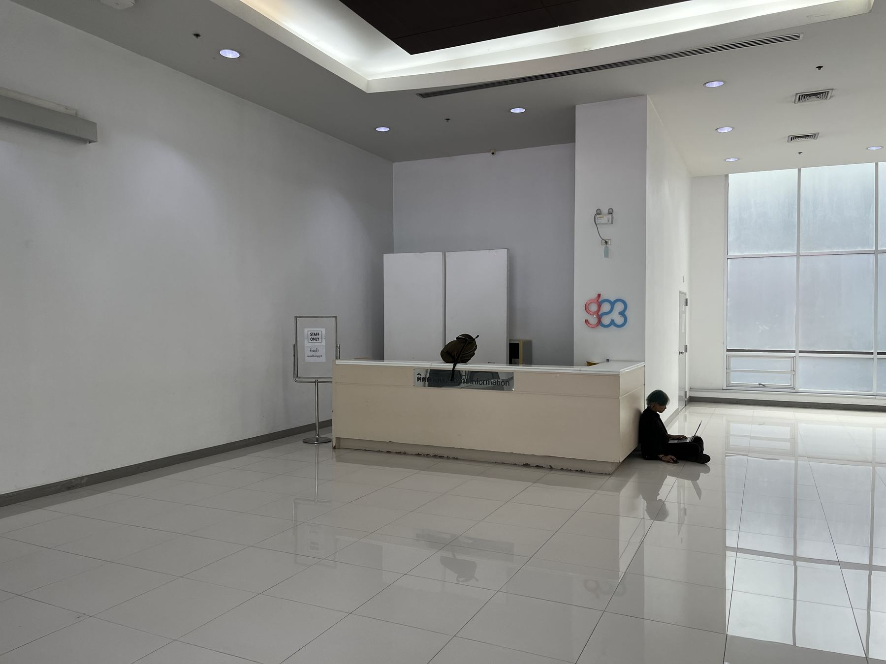
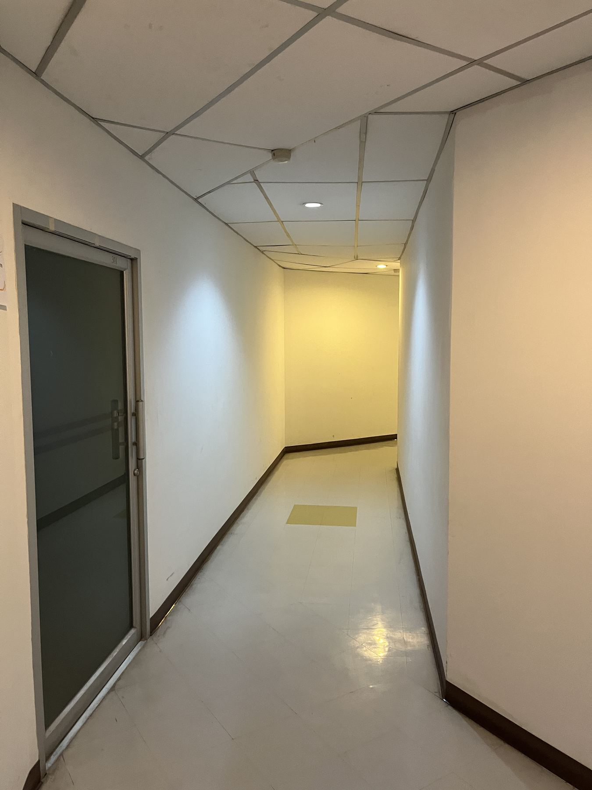
リミナルスペースの発生に先行するのはオルタナティブ・スペースの死であり、その逆ではない。そして、オルタナティブ・スペースの死をめぐる様々な否認は、その「死因」を覆い隠すことからはじまっている。本当は、誰もがその原因を知っているが、語りたくないのだ。
あえて乱暴に、その「死因」を言葉にしてみるなら、それはおそらく、芸術における「一次産業」の失敗と放棄、である。そもそもオルタナティブ・スペースは、足元の「死体」に水をやり、耕すところから生まれたはずだった。先に見た二種類の否認は、芸術の一次産業から離れ、形骸化した二次産業や、お決まりのビジネスモデルに依存した三次、四次産業が蔓延してゆくにつれて、ますます強固なものになっていった。今や人々は、芸術の一次産業とはどんなもので、どうやっていたのかすら、思い出せなくなっている。
かつて夢に見たオルタナティブ・スペースは、もう生まれない。少なくとも当分の間は。なぜなら、もうすでに大量の、見過ごされてきた「死体」の山が積み重なり、地面すら見えなくなってしまったから。手を変え品を変え、その死体の山を覆い隠そうとした結果、漏れ出した死臭がいたるところに漂っているから。
それでもなお、「アート」はその腐臭に気がつかない。だからこそ、その腐臭はネットカルチャーにまで辿り着いて、リミナルスペースとして現れた。
もはや私たちは、この環境に適応するほかないのかもしれない。耕せど耕せど、死体は死体のままで、ついに地面を見ることが叶わないのなら、足元の死体を中間宿主として、そこで育ちうる生命へと変異するべきなのかもしれない。リミナルスペースは、どこか「外部」へとつながる扉でも、「他者」の気配でもないのだから。
2026年8月17日 黒瀬陽平
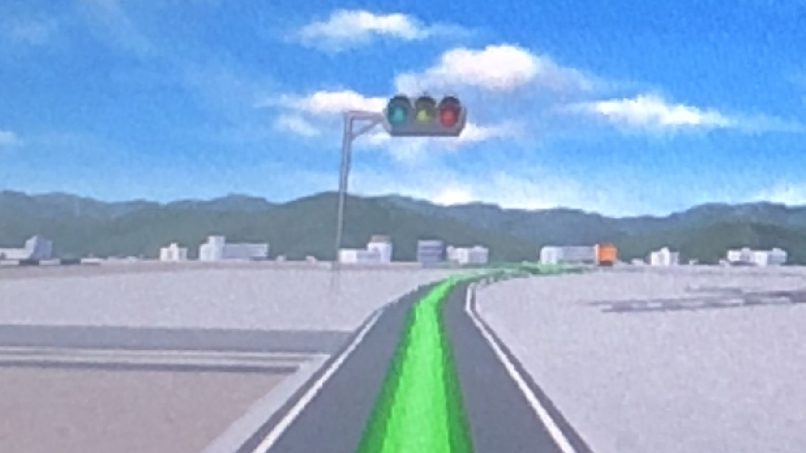
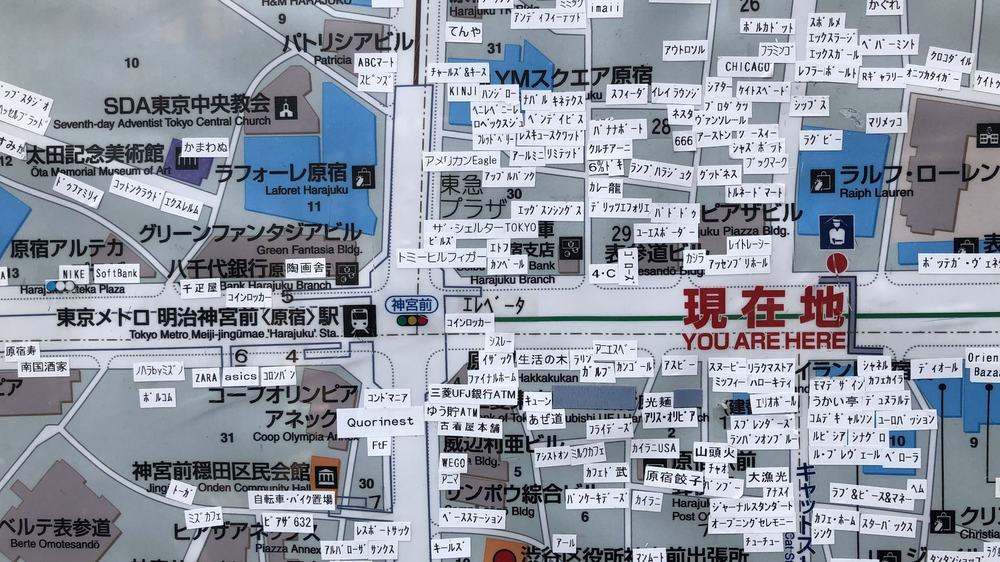
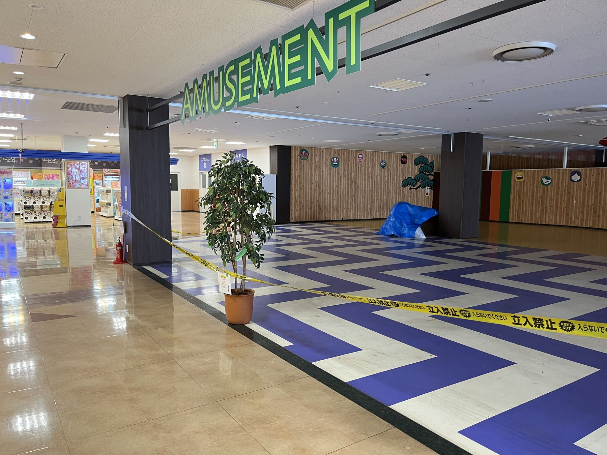
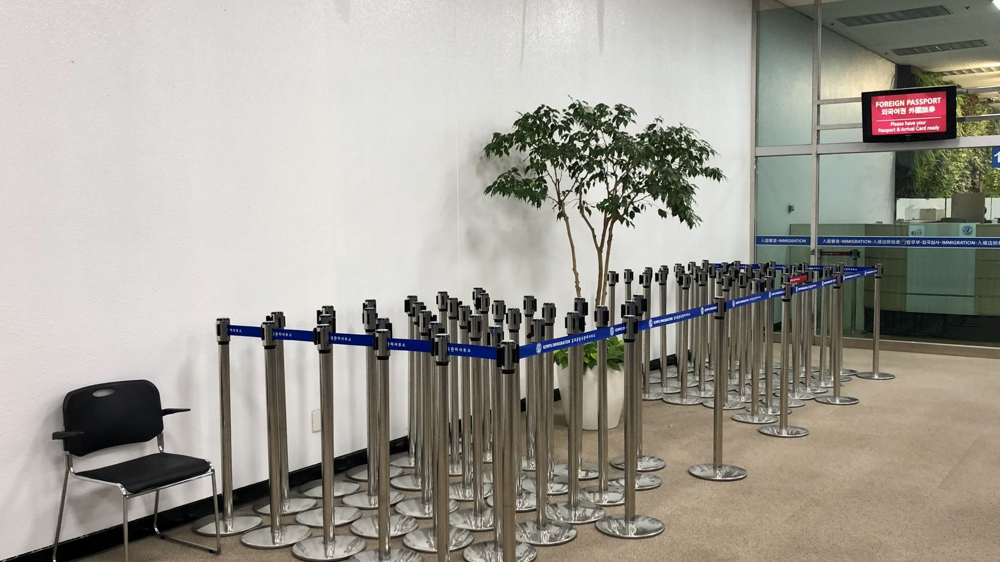
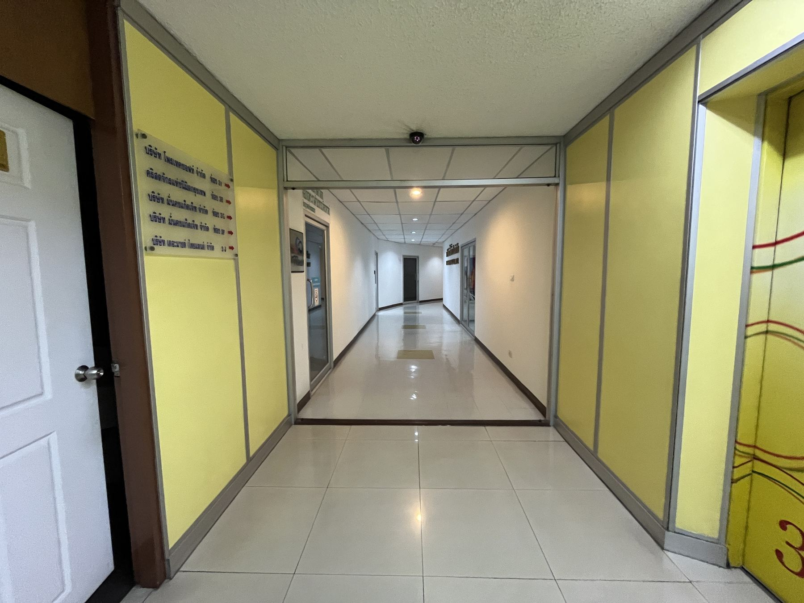
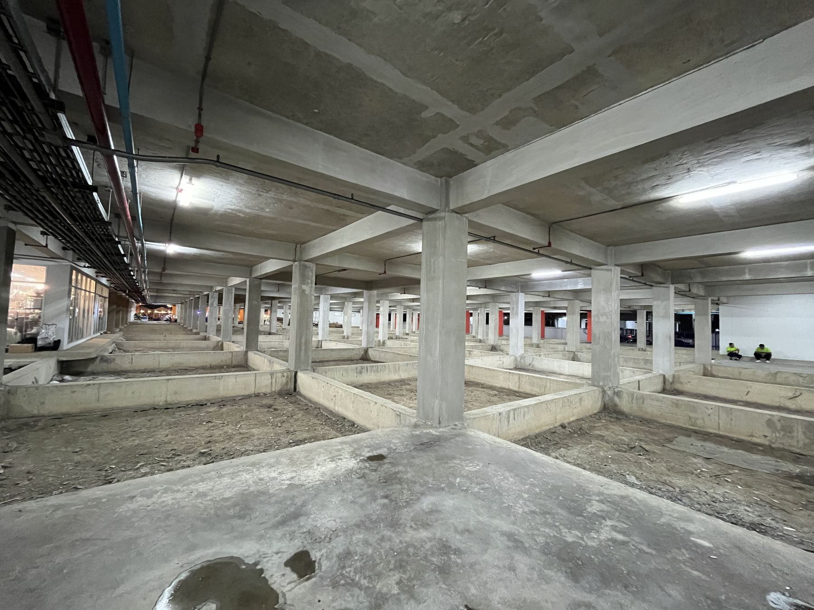
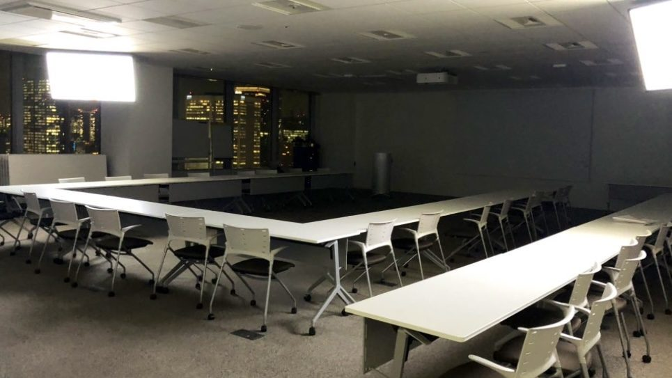
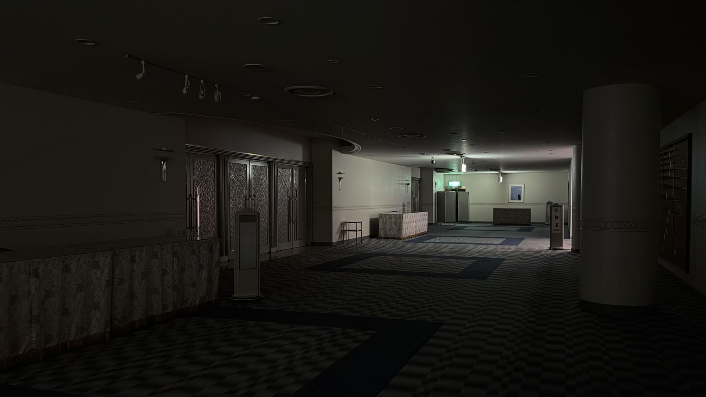
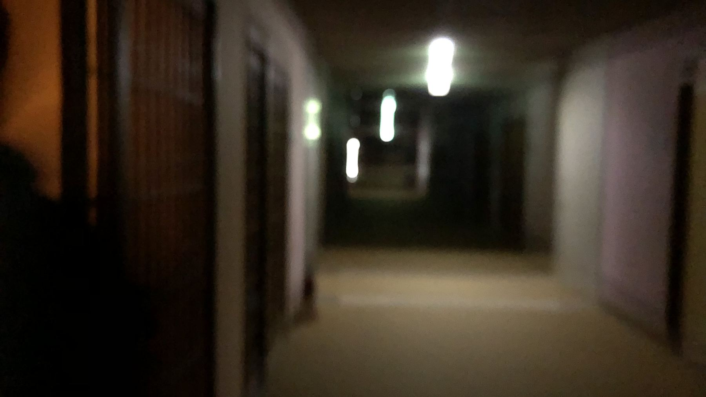
- 展覧会名
- Backrooms(Found Bodies)
- 第1部
- 会期｜2026年11月
会場｜都内某所 - 第2部
- 会期｜2026年12月
会場｜関西某所 - テキスト
- 黒瀬陽平
※会場・日時などの詳細情報は、順次本ページにて公開されます。